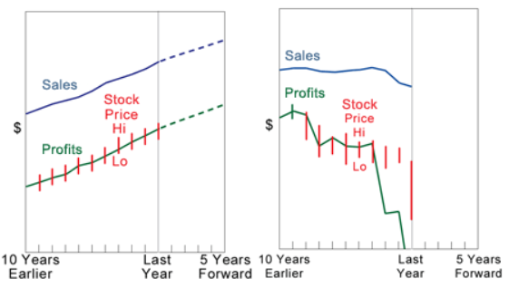
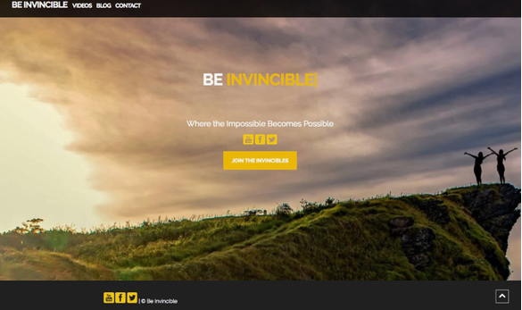

Hi, I'm Cristina. I...
Experience
Specialist in need. Generalist at heart.
Full Stack Developer
- html(5)
- css(3)
- Javascript
- Flask | Python
- SQL
- NodeJS
Selected Distinctions
- Government Award of Excellence
- Government Diamond Award for Top Project
- University of Waterloo Mathematics Award
- Government NSERC Research Grant
- Two Google Techmakers Scholarships
- Best Session-Research-Paper Award
Selected Publications
- Naive Bayes Fact Based Search Engine
- Virtual Sleep Coach Improves Health Care
- Ambiguity in Software Requirements
- Wireless Mesh Network Performance for USAR
- Computational Public Safety
- Canine Pose Estimation: Public Safety Solution
Work
Here are a few of my former clients.

Computing that saves lives!
Invented, engineered, and programmed, a device and predicition algorithm for the Ontario Provincial Police Search and Rescue Unit.
Discovery ChannelToronto Star Newspaper
Research Publications

Canadian Shareowner Investments Inc.
Web
Developed investment graphing analysis software for Canadian Shareowner Investments Inc. In addition, developed sherll scripts to automate pulling real-time stock data.
Visit Website

Be Invincible
Web
Be Invicible is an inspirational blog, where what seems impossible becomes possible.
Visit WebsiteTeaching
In the last couple of years, I've taught programming to hundreds of students both privately in person and remotely. Here are some of the domains I've helped students with...